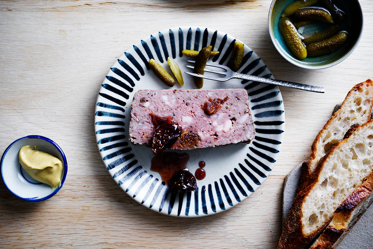

Venison Terrine

"While there's a lot of technique (that goes into this terrine), they're
very simple, because we have access to such beautiful produce here."
INGREDIENTS
- 200g chicken livers, cleaned
- 100ml thickend cream
- 500g venison shoulder, minced
- 600g pork belly, minced
- 300g pork back fat, minced
- Zest of 1 orange
- 70g of dried figs
- 1/2 bunch of thyme
- Fig jam, to serve
- Crusty bread, to serve
- Cornichons, to serve
- French mustard, to serve
- 15 cloves
- 10 juniper berries
- 5 star anise
- 1 tsp fennel seeds
- 1 tsp black peppercorns
- 1 tsp allspice
METHOD
- For the spice mix, preheat oven to 170°C.
-
Combine all spices and place on a baking tray. Toast for 10 minutes or
until fragrant, then cool completely. Whiz in a spice grinder or small
food processor to a fine powder. Set aside. (Spice mix will keep in an
airtight container for up to a month.)
-
Place chicken livers, cream and brandy in a blender and whiz until
smooth. Set aside. Combine minced venison, pork belly and back fat in
the bowl of a stand mixer fitted with the paddle attachment. Add 1 tbs
spice mix, orange zest, dried figs, thyme and 2 tbs table salt.
-
Mix on the lowest speed to just combine, then gradually add the liver
mixture. Work the mixture until it becomes well combined and sticky -
this should only take a minute. You don't want to over-work it, as
it's nice to see the mosaic of mince in your finished terrine.
-
Preheat oven to 110°C. Line a 28cm x 13cm (2L-capacity) terrine mould
with plastic wrap, allowing enough overhang to cover the top of your
terrine.
-
Press terrine mixture into the prepared mould, making sure it reaches
all corners and that there are no air bubbles. Smooth the top evenly
to form the shape of a baked loaf of bread.
-
Fold the plastic wrap over on all four sides to seal the terrine, then
tightly fit a sheet of foil over the top. This will help it keep a
nice shape while cooking.
-
Place terrine in a deep roasting tray filled with enough water to come
one-third of the way up the terrine mould. Transfer to oven and bake
for 1 hour-1 hour 30 minutes until the internal temperature reaches
63°C on a thermometer.
-
Carefully remove terrine from the water bath and cool for 30 minutes
before chilling in the refrigerator for 12 hours or overnight.
-
The next day, remove terrine from the mould and serve with fig jam,
crusty bread, cornichons and very good French mustard alongside.